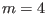
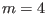
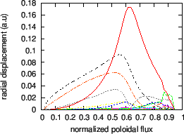

Next: Magnetic curvature Up: Numerical results for EAST Previous: Numerical results of MHD
When analyzing the modes calculated numerically, we need to distinguish two kinds of modes: the continuum modes and the gap modes. In principle, the continuum mode is defined as the mode whose frequency is within the Alfven continua while the gap mode is defined as the mode whose frequency is within the frequency gap of the Alfven continua. However, for realistic equilibria, any given frequency will touch the continua at one of the radial locations.
However, for realistic structure of continua, both the range and the center of the frequency of a gap change with the radial coordinate, as is shown in Fig. 16. As a result, a given frequency usually can not be within a gap for all radial locations, i.e., the frequency usually intersects the Alfven continua at some radial locations. These locations are the Alfven resonant surfaces. As is pointed out in Ref. [], the mode structure have singularity given by at the resonant surface, where is the radial coordinate of the resonant surface and can have finite discontinuity.
In practice, continuum modes can be easily distinguished from gap modes by examining the radial structure of the poloidal harmonics of the mode. If the radial mode structure has dominant singularities at the Alfven resonant surfaces, then the modes are continua modes. If the dominant peaks of the mode are not at the Alfven resonant surfaces, then the mode is probably a gap mode (further confirmation can be obtained by examining poloidal mode number of the dominant harmonics, discussed later). The mode structure of gap modes can also have singular peak at the resonant surface, but the peak is usually smaller than the dominant peak.
Mode structure of a  TAE mode is plotted in Fig. 20
TAE mode is plotted in Fig. 20
Fig. 22. plots the radial mode structure of another TAE with frequency .
 |
An example of ellipticity-induced Alfven Eigenmode (EAE) is plotted in Fig.
24. The mode is identified as an EAE mode because it satisfies the
following three requirements: (1) the mode has two dominant harmonics with
poloidal mode number differing by two ( and  for this case); (2)
the frequency of the mode
is within in the continuum gap
formed due to the coupling of these two poloidal harmonics; (3) the location
of the peak of the radial mode structure is within the continuum gap.
and  for this case); (2)
the frequency of the mode
is within in the continuum gap
formed due to the coupling of these two poloidal harmonics; (3) the location
of the peak of the radial mode structure is within the continuum gap.
An example of non-circularity-induced Alfven Eigenmode (NAE) is plotted in Fig. 26.
|  |

yj 2015-09-04